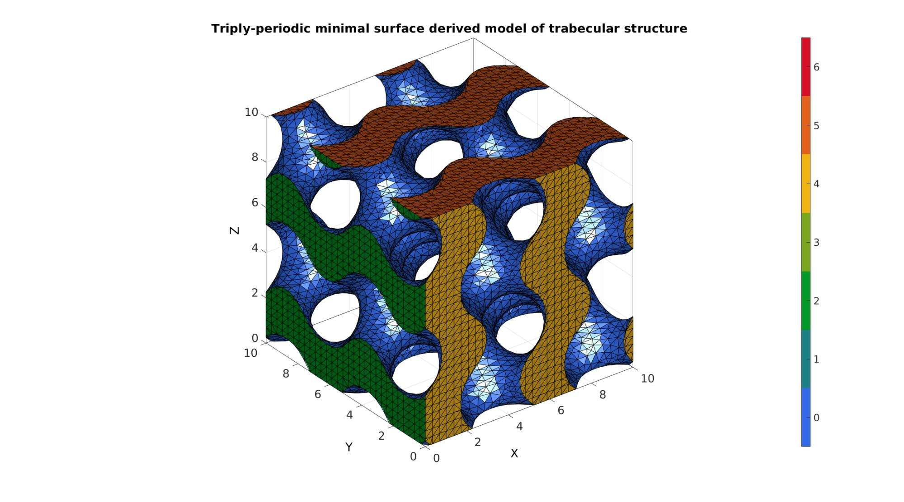
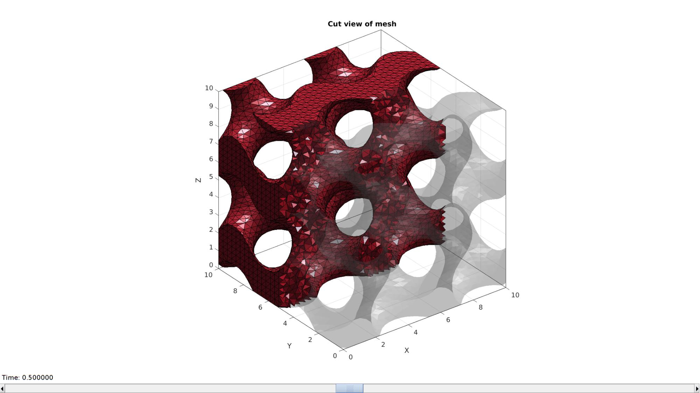
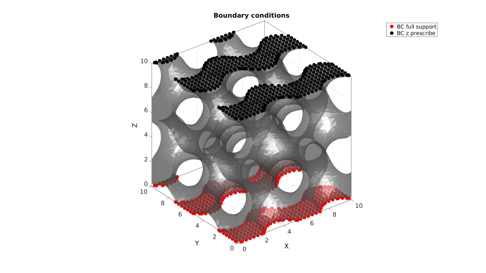
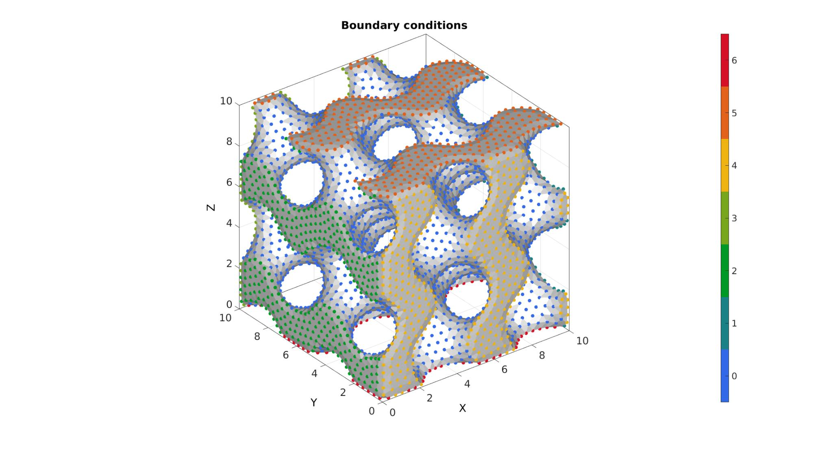
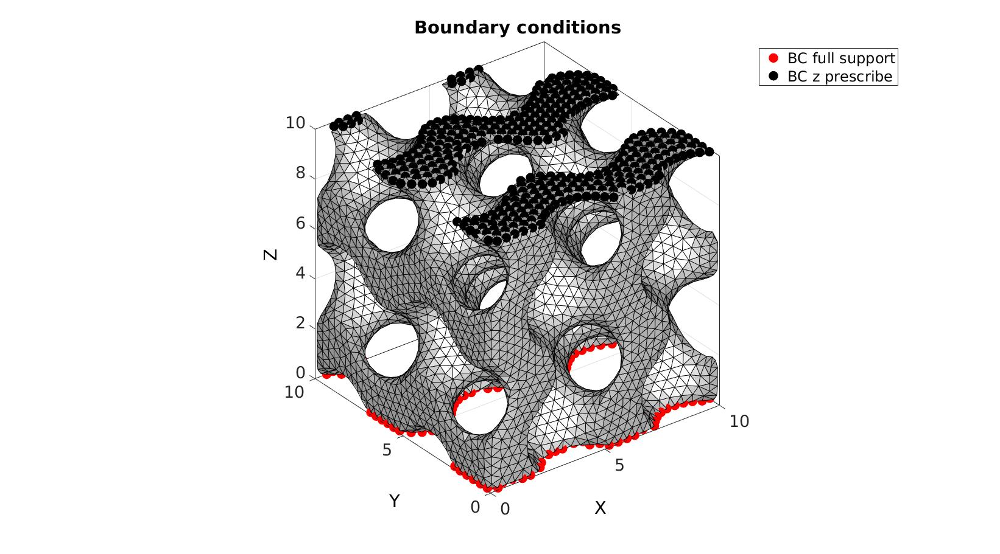
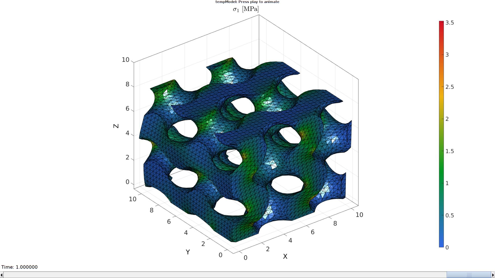
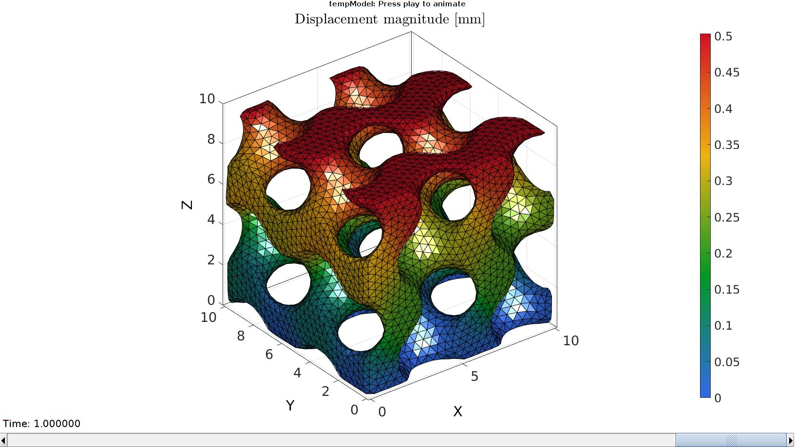
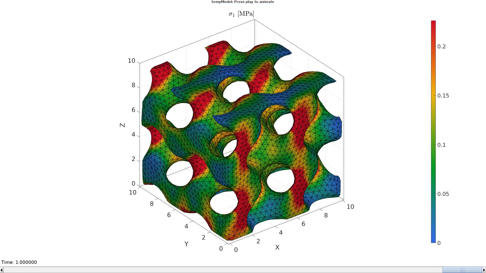

DEMO_febio_0010_trabeculae_compression
Below is a demonstration for:
- Building geometry for trabecular structure with tetrahedral elements
- Defining the boundary conditions
- Coding the febio structure
- Running the model
- Importing and visualizing the displacement and stress results
Contents
- Keywords:
- Plot settings
- Control parameters
- DEFINING GEOMETRY
- Using grouping to keep only largest group
- Remesh using geomgram
- Tetrahedral meshing using tetgen (see also runTetGen)
- Tetrahedral meshing using tetgen (see also runTetGen)
- Visualizing mesh using meshView, see also anim8
- Defining node labels
- Define boundary conditions
- Defining the FEBio input structure
- Quick viewing of the FEBio input file structure
- Exporting the FEBio input file
- Running the FEBio analysis
- Import FEBio results
Keywords:
- febio_spec version 4.0
- febio, FEBio
- compression, tension, compressive, tensile
- displacement control, displacement boundary condition
- trabecular
- tetgen, meshing
- tetrahedral elements, tet4
- static, solid
- hyperelastic, Ogden
- displacement logfile
- Stress logfile
clear; close all; clc;
Plot settings
fontSize=20; faceAlpha1=0.8; markerSize=40; lineWidth1=3; lineWidth2=4; markerSize1=25;
Control parameters
% Path names defaultFolder = fileparts(fileparts(mfilename('fullpath'))); savePath=fullfile(defaultFolder,'data','temp'); % Defining file names febioFebFileNamePart='tempModel'; febioFebFileName=fullfile(savePath,[febioFebFileNamePart,'.feb']); %FEB file name febioLogFileName=[febioFebFileNamePart,'.txt']; %FEBio log file name febioLogFileName_disp=[febioFebFileNamePart,'_disp_out.txt']; %Log file name for exporting displacement febioLogFileName_stress_prin=[febioFebFileNamePart,'_stress_prin_out.txt']; %Log file name for exporting stress febioLogFileName_stress_full=[febioFebFileNamePart,'_stress_full_out.txt']; %Log file name for exporting stress porousGeometryCase=1; sampleSize=10; %Heigh of the sample pointSpacing=sampleSize/25; tolDir=pointSpacing/5; %Tolerance for detecting sides after remeshing overSampleRatio=2; numStepsLevelset=ceil(overSampleRatio.*(sampleSize./pointSpacing)); %Number of voxel steps across period for image data (roughly number of points on mesh period) %Define applied displacement appliedStrain=0.05; %Linear strain (Only used to compute applied stretch) loadingOption='compression'; % or 'tension' or 'shear' switch loadingOption case 'compression' stretchLoad=1-appliedStrain; %The applied stretch for uniaxial loading displacementMagnitude=(stretchLoad*sampleSize)-sampleSize; %The displacement magnitude case 'tension' stretchLoad=1+appliedStrain; %The applied stretch for uniaxial loading displacementMagnitude=(stretchLoad*sampleSize)-sampleSize; %The displacement magnitude case 'shear' stretchLoad=1+appliedStrain; %The applied stretch for uniaxial loading displacementMagnitude=(stretchLoad*sampleSize)-sampleSize; %The displacement magnitude end %Material parameter set E_youngs=5; %Youngs modulus nu=0.3; %Poisson's ratio % mu=E_youngs/3; %FEA control settings numTimeSteps=10; %Number of time steps desired max_refs=15; %Max reforms max_ups=0; %Set to zero to use full-Newton iterations opt_iter=6; %Optimum number of iterations max_retries=5; %Maximum number of retires dtmin=(1/numTimeSteps)/100; %Minimum time step size dtmax=1/numTimeSteps; %Maximum time step size runMode='external';% 'internal' or 'external'
DEFINING GEOMETRY
The trabecular structure is here simulated using
switch porousGeometryCase case 1 %Gyroid inputStruct.L=sampleSize; % characteristic length inputStruct.Ns=numStepsLevelset; % number of sampling points inputStruct.isocap=1; %Option to cap the isosurface inputStruct.surfaceCase='g'; %Surface type inputStruct.numPeriods=[2 2 2]; %Number of periods in each direction inputStruct.levelset=0.3; %Isosurface level [F,V,C,S]=triplyPeriodicMinimalSurface(inputStruct); case 2 %Stochastic structure inputStruct.L=1; % characteristic length inputStruct.Ns=numStepsLevelset; % number of sampling points inputStruct.Nw=60; % number of waves inputStruct.q0=25; % wave number inputStruct.relD=0.3; % relative density inputStruct.anisotropyFactors=[1 1 1]; %Anisotropy factors inputStruct.isocap=1; %Option to cap the isosurface [F,V,C,S]=stochasticMicrostructure(inputStruct); V=V.*sampleSize; case 3 %spinodoid inputStruct.isocap=true; % option to cap the isosurface inputStruct.domainSize=1; % domain size inputStruct.resolution=numStepsLevelset; % resolution for sampling GRF inputStruct.waveNumber=8*pi; % GRF wave number inputStruct.numWaves=500; % number of waves in GRF inputStruct.relativeDensity=0.5; % relative density: between [0.3,1] inputStruct.thetas=[90 0 0]; % conical half angles (in degrees) along xyz [F,V,C,S]=spinodoid(inputStruct); V=V.*sampleSize; end
Using grouping to keep only largest group
groupOptStruct.outputType='label'; [G,~,groupSize]=tesgroup(F,groupOptStruct); %Group connected faces [~,indKeep]=max(groupSize); %Index of largest group %Keep only largest group F=F(G==indKeep,:); %Trim faces C=C(G==indKeep,:); %Trim color data [F,V]=patchCleanUnused(F,V); %Remove unused nodes % %% Remove non-manifold faces % D=patchConnectivity(F,V,'ff'); % logicManifold=sum(D.face.face>0,2)==3; % F=F(logicManifold,:); % C=C(logicManifold,:); % [F,V]=patchCleanUnused(F,V); % %% Smoothen mesh % % %Smoothen surface mesh (isosurface does not yield high quality mesh) % indKeep=F(C~=0,:);%F(size(Fi,1)+1:end,:); % indKeep=unique(indKeep(:)); % cPar.n=75; % cPar.RigidConstraints=indKeep; %Boundary nodes are held on to % cPar.Method='HC'; % [V]=patchSmooth(F,V,[],cPar);
Visualizing geometry
cFigure; hold on; title('Raw iso-surface based','FontSize',fontSize); gpatch(F,V,C,'k',1); % plotV(V(indKeep,:),'k.','MarkerSize',markerSize1); axisGeom(gca,fontSize); colormap gjet; icolorbar; camlight headlight; drawnow;
Remesh using geomgram
optionStruct.pointSpacing=pointSpacing;
% optionStruct.max_dist=0;
[F,V]=ggremesh(F,V,optionStruct);
C=zeros(size(F,1),1);
Visualizing geometry
cFigure; hold on; title('Geogram remeshed','FontSize',fontSize); gpatch(F,V,'w','k',1); axisGeom(gca,fontSize); camlight headlight; drawnow;
Tetrahedral meshing using tetgen (see also runTetGen)
% Create tetgen input structure inputStruct.stringOpt='-pq1.2AaY'; inputStruct.Faces=F;
Tetrahedral meshing using tetgen (see also runTetGen)
% Create tetgen input structure inputStruct.stringOpt='-pq1.2AaY'; inputStruct.Faces=F; inputStruct.Nodes=V; inputStruct.holePoints=[]; inputStruct.faceBoundaryMarker=C; %Face boundary markers inputStruct.regionPoints=getInnerPoint(F,V); %region points inputStruct.regionA=2*tetVolMeanEst(F,V); inputStruct.minRegionMarker=2; %Minimum region marker % Mesh model using tetrahedral elements using tetGen [meshOutput]=runTetGen(inputStruct); %Run tetGen % Access model element and patch data Fb=meshOutput.facesBoundary; Cb=meshOutput.boundaryMarker; V=meshOutput.nodes; CE=meshOutput.elementMaterialID; E=meshOutput.elements;
%%%%%%%%%%%%%%%%%%%%%%%%%%%%%%%%%%%%%%%%%%%%% --- TETGEN Tetrahedral meshing --- 20-Apr-2023 10:39:56 %%%%%%%%%%%%%%%%%%%%%%%%%%%%%%%%%%%%%%%%%%%%% --- Writing SMESH file --- 20-Apr-2023 10:39:56 ----> Adding node field ----> Adding facet field ----> Adding holes specification ----> Adding region specification --- Done --- 20-Apr-2023 10:39:57 --- Running TetGen to mesh input boundary--- 20-Apr-2023 10:39:57 Opening /mnt/data/MATLAB/GIBBON/data/temp/temp.smesh. Delaunizing vertices... Delaunay seconds: 0.032603 Creating surface mesh ... Surface mesh seconds: 0.01017 Recovering boundaries... Boundary recovery seconds: 0.026791 Removing exterior tetrahedra ... Spreading region attributes. Exterior tets removal seconds: 0.015084 Recovering Delaunayness... Delaunay recovery seconds: 0.011288 Refining mesh... Refinement seconds: 0.150805 Smoothing vertices... Mesh smoothing seconds: 0.276673 Improving mesh... Mesh improvement seconds: 0.012198 Writing /mnt/data/MATLAB/GIBBON/data/temp/temp.1.node. Writing /mnt/data/MATLAB/GIBBON/data/temp/temp.1.ele. Writing /mnt/data/MATLAB/GIBBON/data/temp/temp.1.face. Writing /mnt/data/MATLAB/GIBBON/data/temp/temp.1.edge. Output seconds: 0.098723 Total running seconds: 0.634884 Statistics: Input points: 6159 Input facets: 12422 Input segments: 18633 Input holes: 0 Input regions: 1 Mesh points: 11238 Mesh tetrahedra: 48639 Mesh faces: 103489 Mesh faces on exterior boundary: 12422 Mesh faces on input facets: 12422 Mesh edges on input segments: 18633 Steiner points inside domain: 5079 --- Done --- 20-Apr-2023 10:39:58 %%%%%%%%%%%%%%%%%%%%%%%%%%%%%%%%%%%%%%%%%%%%% --- Importing TetGen files --- 20-Apr-2023 10:39:58 --- Done --- 20-Apr-2023 10:39:58
Visualizing mesh using meshView, see also anim8
meshView(meshOutput);
Defining node labels
C_vertex=zeros(size(V,1),1); for q=1:3 logic1=V(:,q)>(sampleSize-tolDir); logic2=V(:,q)<tolDir; C_vertex(logic1)=max(C_vertex(:))+1; C_vertex(logic2)=max(C_vertex(:))+1; end
Visualizing vertex/node labels
hf=cFigure; title('Boundary conditions','FontSize',fontSize); xlabel('X','FontSize',fontSize); ylabel('Y','FontSize',fontSize); zlabel('Z','FontSize',fontSize); hold on; gpatch(Fb,V,'w','none',1); scatterV(V,50,C_vertex,'filled'); axisGeom(gca,fontSize); colormap gjet; icolorbar; camlight headlight; drawnow;
Define boundary conditions
bcSupportList=find(C_vertex==6); bcPrescribeList=find(C_vertex==5);
Visualizing boundary conditions. Markers plotted on the semi-transparent model denote the nodes in the various boundary condition lists.
hf=cFigure; title('Boundary conditions','FontSize',fontSize); xlabel('X','FontSize',fontSize); ylabel('Y','FontSize',fontSize); zlabel('Z','FontSize',fontSize); hold on; gpatch(Fb,V,'w','k',1); hl(1)=plotV(V(bcSupportList,:),'r.','MarkerSize',markerSize); hl(2)=plotV(V(bcPrescribeList,:),'k.','MarkerSize',markerSize); legend(hl,{'BC full support','BC z prescribe'}); axisGeom(gca,fontSize); camlight headlight; drawnow;
Defining the FEBio input structure
See also febioStructTemplate and febioStruct2xml and the FEBio user manual.
%Get a template with default settings [febio_spec]=febioStructTemplate; %febio_spec version febio_spec.ATTR.version='4.0'; %Module section febio_spec.Module.ATTR.type='solid'; %Control section febio_spec.Control.analysis='STATIC'; febio_spec.Control.time_steps=numTimeSteps; febio_spec.Control.step_size=1/numTimeSteps; febio_spec.Control.solver.max_refs=max_refs; febio_spec.Control.time_stepper.dtmin=dtmin; febio_spec.Control.time_stepper.dtmax=dtmax; febio_spec.Control.time_stepper.max_retries=max_retries; febio_spec.Control.time_stepper.opt_iter=opt_iter; %Material section materialName1='Material1'; febio_spec.Material.material{1}.ATTR.name=materialName1; febio_spec.Material.material{1}.ATTR.type='neo-Hookean'; febio_spec.Material.material{1}.ATTR.id=1; febio_spec.Material.material{1}.E=E_youngs; febio_spec.Material.material{1}.v=nu; % Mesh section % -> Nodes febio_spec.Mesh.Nodes{1}.ATTR.name='Object1'; %The node set name febio_spec.Mesh.Nodes{1}.node.ATTR.id=(1:size(V,1))'; %The node id's febio_spec.Mesh.Nodes{1}.node.VAL=V; %The nodel coordinates % -> Elements partName1='Part1'; febio_spec.Mesh.Elements{1}.ATTR.name=partName1; %Name of this part febio_spec.Mesh.Elements{1}.ATTR.type='tet4'; %Element type febio_spec.Mesh.Elements{1}.elem.ATTR.id=(1:1:size(E,1))'; %Element id's febio_spec.Mesh.Elements{1}.elem.VAL=E; %The element matrix % -> NodeSets nodeSetName1='bcSupportList'; nodeSetName2='bcPrescribeList'; febio_spec.Mesh.NodeSet{1}.ATTR.name=nodeSetName1; febio_spec.Mesh.NodeSet{1}.VAL=mrow(bcSupportList); febio_spec.Mesh.NodeSet{2}.ATTR.name=nodeSetName2; febio_spec.Mesh.NodeSet{2}.VAL=mrow(bcPrescribeList); %MeshDomains section febio_spec.MeshDomains.SolidDomain.ATTR.name=partName1; febio_spec.MeshDomains.SolidDomain.ATTR.mat=materialName1; %Boundary condition section % -> Fix boundary conditions switch loadingOption case 'shear' febio_spec.Boundary.bc{1}.ATTR.name='FixedDisplacement01'; febio_spec.Boundary.bc{1}.ATTR.type='zero displacement'; febio_spec.Boundary.bc{1}.ATTR.node_set=nodeSetName1; febio_spec.Boundary.bc{1}.x_dof=1; febio_spec.Boundary.bc{1}.y_dof=1; febio_spec.Boundary.bc{1}.z_dof=1; febio_spec.Boundary.bc{2}.ATTR.name='FixedDisplacement02'; febio_spec.Boundary.bc{2}.ATTR.type='zero displacement'; febio_spec.Boundary.bc{2}.ATTR.node_set=nodeSetName2; febio_spec.Boundary.bc{2}.x_dof=0; febio_spec.Boundary.bc{2}.y_dof=1; febio_spec.Boundary.bc{2}.z_dof=1; febio_spec.Boundary.bc{3}.ATTR.name='bcPrescribeList'; febio_spec.Boundary.bc{3}.ATTR.type='prescribed displacement'; febio_spec.Boundary.bc{3}.ATTR.node_set=nodeSetName2; febio_spec.Boundary.bc{3}.dof='x'; febio_spec.Boundary.bc{3}.value.ATTR.lc=1; febio_spec.Boundary.bc{3}.value.VAL=displacementMagnitude; febio_spec.Boundary.bc{3}.relative=0; case 'compression' febio_spec.Boundary.bc{1}.ATTR.name='FixedDisplacement01'; febio_spec.Boundary.bc{1}.ATTR.type='zero displacement'; febio_spec.Boundary.bc{1}.ATTR.node_set=nodeSetName1; febio_spec.Boundary.bc{1}.x_dof=1; febio_spec.Boundary.bc{1}.y_dof=1; febio_spec.Boundary.bc{1}.z_dof=1; febio_spec.Boundary.bc{2}.ATTR.name='FixedDisplacement02'; febio_spec.Boundary.bc{2}.ATTR.type='zero displacement'; febio_spec.Boundary.bc{2}.ATTR.node_set=nodeSetName2; febio_spec.Boundary.bc{2}.x_dof=1; febio_spec.Boundary.bc{2}.y_dof=1; febio_spec.Boundary.bc{2}.z_dof=0; febio_spec.Boundary.bc{3}.ATTR.name='bcPrescribeList'; febio_spec.Boundary.bc{3}.ATTR.type='prescribed displacement'; febio_spec.Boundary.bc{3}.ATTR.node_set=nodeSetName2; febio_spec.Boundary.bc{3}.dof='z'; febio_spec.Boundary.bc{3}.value.ATTR.lc=1; febio_spec.Boundary.bc{3}.value.VAL=displacementMagnitude; febio_spec.Boundary.bc{3}.relative=0; otherwise error('Invalid loadingOption provided'); end %LoadData section % -> load_controller febio_spec.LoadData.load_controller{1}.ATTR.name='LC1'; febio_spec.LoadData.load_controller{1}.ATTR.id=1; febio_spec.LoadData.load_controller{1}.ATTR.type='loadcurve'; febio_spec.LoadData.load_controller{1}.interpolate='LINEAR'; febio_spec.LoadData.load_controller{1}.extend='CONSTANT'; febio_spec.LoadData.load_controller{1}.points.pt.VAL=[0 0; 1 1]; %Output section % -> log file febio_spec.Output.logfile.ATTR.file=febioLogFileName; febio_spec.Output.logfile.node_data{1}.ATTR.file=febioLogFileName_disp; febio_spec.Output.logfile.node_data{1}.ATTR.data='ux;uy;uz'; febio_spec.Output.logfile.node_data{1}.ATTR.delim=','; febio_spec.Output.logfile.element_data{1}.ATTR.file=febioLogFileName_stress_prin; febio_spec.Output.logfile.element_data{1}.ATTR.data='s1;s2;s3'; febio_spec.Output.logfile.element_data{1}.ATTR.delim=','; febio_spec.Output.logfile.element_data{2}.ATTR.file=febioLogFileName_stress_full; febio_spec.Output.logfile.element_data{2}.ATTR.data='sx;sy;sz;sxy;syz;sxz'; febio_spec.Output.logfile.element_data{2}.ATTR.delim=','; febio_spec.Output.plotfile.compression=0;
Quick viewing of the FEBio input file structure
The febView function can be used to view the xml structure in a MATLAB figure window.
febView(febio_spec); %Viewing the febio file
Exporting the FEBio input file
Exporting the febio_spec structure to an FEBio input file is done using the febioStruct2xml function.
febioStruct2xml(febio_spec,febioFebFileName); %Exporting to file and domNode
Running the FEBio analysis
To run the analysis defined by the created FEBio input file the runMonitorFEBio function is used. The input for this function is a structure defining job settings e.g. the FEBio input file name. The optional output runFlag informs the user if the analysis was run succesfully.
febioAnalysis.run_filename=febioFebFileName; %The input file name febioAnalysis.run_logname=febioLogFileName; %The name for the log file febioAnalysis.disp_on=1; %Display information on the command window febioAnalysis.runMode=runMode; [runFlag]=runMonitorFEBio(febioAnalysis);%START FEBio NOW!!!!!!!!
%%%%%%%%%%%%%%%%%%%%%%%%%%%%%%%%%%%%%%%%%%%%%%%%%%%%%%%%%%%%%%%%%%%%%%%%%%%
--------> RUNNING/MONITORING FEBIO JOB <-------- 20-Apr-2023 10:40:05
FEBio path: /home/kevin/FEBioStudio2/bin/febio4
# Attempt removal of existing log files 20-Apr-2023 10:40:05
* Removal succesful 20-Apr-2023 10:40:05
# Attempt removal of existing .xplt files 20-Apr-2023 10:40:05
* Removal succesful 20-Apr-2023 10:40:05
# Starting FEBio... 20-Apr-2023 10:40:05
Max. total analysis time is: Inf s
* Waiting for log file creation 20-Apr-2023 10:40:05
Max. wait time: 30 s
* Log file found. 20-Apr-2023 10:40:06
# Parsing log file... 20-Apr-2023 10:40:06
number of iterations : 2 20-Apr-2023 10:40:07
number of reformations : 2 20-Apr-2023 10:40:07
------- converged at time : 0.1 20-Apr-2023 10:40:07
number of iterations : 2 20-Apr-2023 10:40:08
------- converged at time : 0.2 20-Apr-2023 10:40:09
number of iterations : 2 20-Apr-2023 10:40:10
number of reformations : 2 20-Apr-2023 10:40:10
------- converged at time : 0.3 20-Apr-2023 10:40:10
number of iterations : 2 20-Apr-2023 10:40:12
number of reformations : 2 20-Apr-2023 10:40:12
number of iterations : 3 20-Apr-2023 10:40:14
number of reformations : 3 20-Apr-2023 10:40:14
------- converged at time : 0.5 20-Apr-2023 10:40:14
number of iterations : 3 20-Apr-2023 10:40:17
number of reformations : 3 20-Apr-2023 10:40:17
------- converged at time : 0.6 20-Apr-2023 10:40:17
number of iterations : 3 20-Apr-2023 10:40:19
number of reformations : 3 20-Apr-2023 10:40:19
------- converged at time : 0.7 20-Apr-2023 10:40:19
number of iterations : 3 20-Apr-2023 10:40:21
number of reformations : 3 20-Apr-2023 10:40:21
------- converged at time : 0.8 20-Apr-2023 10:40:21
number of iterations : 3 20-Apr-2023 10:40:23
number of reformations : 3 20-Apr-2023 10:40:23
------- converged at time : 0.9 20-Apr-2023 10:40:23
number of iterations : 3 20-Apr-2023 10:40:26
number of reformations : 3 20-Apr-2023 10:40:26
------- converged at time : 1 20-Apr-2023 10:40:26
Elapsed time : 0:00:20 20-Apr-2023 10:40:27
N O R M A L T E R M I N A T I O N
# Done 20-Apr-2023 10:40:27
%%%%%%%%%%%%%%%%%%%%%%%%%%%%%%%%%%%%%%%%%%%%%%%%%%%%%%%%%%%%%%%%%%%%%%%%%%%
Import FEBio results
if runFlag==1 %i.e. a succesful run
Importing nodal displacements from a log file
dataStruct=importFEBio_logfile(fullfile(savePath,febioLogFileName_disp),0,1);
%Access data
N_disp_mat=dataStruct.data; %Displacement
timeVec=dataStruct.time; %Time
%Create deformed coordinate set
V_DEF=N_disp_mat+repmat(V,[1 1 size(N_disp_mat,3)]);
Importing element stress from a log file
dataStruct=importFEBio_logfile(fullfile(savePath,febioLogFileName_stress_prin),0,1);
%Access data
E_stress_mat=dataStruct.data;
E_stress_mat(isnan(E_stress_mat))=0;
%Compute Von Mises
S_vm_ND = sqrt( 0.5*((E_stress_mat(:,1,:)-E_stress_mat(:,2,:)).^2 + (E_stress_mat(:,2,:)-E_stress_mat(:,3,:)).^2 + (E_stress_mat(:,1,:)-E_stress_mat(:,3,:)).^2));
%Compute volume weighted mean Von Mises stress
elemVol=tetVol(E,V); %Element volumes
totalVol=sum(elemVol); %Total volume
S_vm_mean=squeeze(sum(S_vm_ND.*repmat(elemVol,[1 1 size(S_vm_ND,3)]),1)./totalVol); %Mean Von Mises stress
appliedDisplacement=dataStruct.time.*displacementMagnitude;
cFigure; hold on;
xlabel('u [mm]','FontSize',fontSize,'Interpreter','Latex');
ylabel('$\sigma_{vm}$ [MPa]','FontSize',fontSize,'Interpreter','Latex');
plot(appliedDisplacement,S_vm_mean,'b','LineWidth',lineWidth1);
axis square; grid on; box on; axis tight;
set(gca,'FontSize',fontSize);
drawnow;
 Plotting the simulated results using anim8 to visualize and animate deformations
DN_magnitude=sqrt(sum(N_disp_mat(:,:,end).^2,2)); %Current displacement magnitude % Create basic view and store graphics handle to initiate animation hf=cFigure; %Open figure gtitle([febioFebFileNamePart,': Press play to animate']); title('Displacement magnitude [mm]','Interpreter','Latex') hp=gpatch(Fb,V_DEF(:,:,end),DN_magnitude,'k',1); %Add graphics object to animate hp.FaceColor='interp'; axisGeom(gca,fontSize); colormap(gjet(250)); colorbar; caxis([0 max(DN_magnitude)]); axis(axisLim(V_DEF)); %Set axis limits statically camlight headlight; % Set up animation features animStruct.Time=timeVec; %The time vector for qt=1:1:size(N_disp_mat,3) %Loop over time increments DN_magnitude=sqrt(sum(N_disp_mat(:,:,qt).^2,2)); %Current displacement magnitude %Set entries in animation structure animStruct.Handles{qt}=[hp hp]; %Handles of objects to animate animStruct.Props{qt}={'Vertices','CData'}; %Properties of objects to animate animStruct.Set{qt}={V_DEF(:,:,qt),DN_magnitude}; %Property values for to set in order to animate end anim8(hf,animStruct); %Initiate animation feature drawnow;
Plotting the simulated results using anim8 to visualize and animate deformations
[CV]=faceToVertexMeasure(E,V,S_vm_ND(:,:,end));
% Create basic view and store graphics handle to initiate animation
hf=cFigure; %Open figure
gtitle([febioFebFileNamePart,': Press play to animate']);
title('$\sigma_{1}$ [MPa]','Interpreter','Latex')
hp=gpatch(Fb,V_DEF(:,:,end),CV,'k',1); %Add graphics object to animate
hp.FaceColor='interp';
axisGeom(gca,fontSize);
colormap(gjet(250)); colorbar;
caxis([min(S_vm_ND(:)) max(S_vm_ND(:))]/4);
axis(axisLim(V_DEF)); %Set axis limits statically
camlight headlight;
% Set up animation features
animStruct.Time=timeVec; %The time vector
for qt=1:1:size(N_disp_mat,3) %Loop over time increments
[CV]=faceToVertexMeasure(E,V,S_vm_ND(:,:,qt));
%Set entries in animation structure
animStruct.Handles{qt}=[hp hp]; %Handles of objects to animate
animStruct.Props{qt}={'Vertices','CData'}; %Properties of objects to animate
animStruct.Set{qt}={V_DEF(:,:,qt),CV}; %Property values for to set in order to animate
end
anim8(hf,animStruct); %Initiate animation feature
drawnow;
 end

GIBBON www.gibboncode.org
Kevin Mattheus Moerman, gibbon.toolbox@gmail.com
GIBBON footer text
License: https://github.com/gibbonCode/GIBBON/blob/master/LICENSE
GIBBON: The Geometry and Image-based Bioengineering add-On. A toolbox for image segmentation, image-based modeling, meshing, and finite element analysis.
Copyright (C) 2006-2020 Kevin Mattheus Moerman
This program is free software: you can redistribute it and/or modify it under the terms of the GNU General Public License as published by the Free Software Foundation, either version 3 of the License, or (at your option) any later version.
This program is distributed in the hope that it will be useful, but WITHOUT ANY WARRANTY; without even the implied warranty of MERCHANTABILITY or FITNESS FOR A PARTICULAR PURPOSE. See the GNU General Public License for more details.
You should have received a copy of the GNU General Public License along with this program. If not, see http://www.gnu.org/licenses/.
GIBBON footer text
License: https://github.com/gibbonCode/GIBBON/blob/master/LICENSE
GIBBON: The Geometry and Image-based Bioengineering add-On. A toolbox for image segmentation, image-based modeling, meshing, and finite element analysis.
Copyright (C) 2006-2022 Kevin Mattheus Moerman and the GIBBON contributors
This program is free software: you can redistribute it and/or modify it under the terms of the GNU General Public License as published by the Free Software Foundation, either version 3 of the License, or (at your option) any later version.
This program is distributed in the hope that it will be useful, but WITHOUT ANY WARRANTY; without even the implied warranty of MERCHANTABILITY or FITNESS FOR A PARTICULAR PURPOSE. See the GNU General Public License for more details.
You should have received a copy of the GNU General Public License along with this program. If not, see http://www.gnu.org/licenses/.